sto-agregarDescargar SVGHorarios, checklists, organigrama, perfiles de puesto y evaluaciones. SVG de 24 × 24, trazo 1.8, variantes oscuro y claro. Acciones comunes conservan la geometría de la colección ETAAX; los estados mantienen verde, rojo y amarillo en la aplicación.
sto-agregarDescargar SVGsto-anteriorDescargar SVGsto-aperturaDescargar SVGsto-asistenciaDescargar SVGsto-ausenciaDescargar SVGsto-bajarDescargar SVGsto-buscarDescargar SVGsto-calendarioDescargar SVGsto-centrarDescargar SVG
sto-cerrarDescargar SVGsto-checklistsDescargar SVG
sto-cierreDescargar SVGsto-compartirDescargar SVGsto-competenciasDescargar SVGsto-conectarDescargar SVGsto-copiarDescargar SVG
sto-correoDescargar SVGsto-cuadriculaDescargar SVGsto-cumplimientoDescargar SVGsto-descansoDescargar SVGsto-descargarDescargar SVGsto-desconectarDescargar SVG
sto-detalleDescargar SVGsto-editarDescargar SVGsto-ejecutarDescargar SVG
sto-eliminarDescargar SVGsto-enlaceDescargar SVG
sto-estadoDescargar SVGsto-evaluacionesDescargar SVGsto-firmarDescargar SVGsto-funcionesDescargar SVGsto-globalDescargar SVG
sto-guardarDescargar SVGsto-horariosDescargar SVG
sto-imprimirDescargar SVGsto-intermedioDescargar SVGsto-limpiezaDescargar SVG
sto-minimizarDescargar SVGsto-opcionesDescargar SVGsto-organigramaDescargar SVGsto-perfilesDescargar SVG
sto-personaDescargar SVG
sto-plantillasDescargar SVGsto-preguntaDescargar SVGsto-puestoDescargar SVG
sto-qrDescargar SVGsto-relojDescargar SVGsto-resultadosDescargar SVGsto-retardoDescargar SVGsto-saludDescargar SVGsto-seccionDescargar SVGsto-siguienteDescargar SVGsto-subirDescargar SVG
sto-tarjetasDescargar SVG
sto-volverDescargar SVGsto-whatsappDescargar SVGsto-zoom-masDescargar SVGsto-zoom-menosDescargar SVG